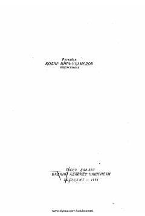

XVHindistonning ijtimoiy o'zgarishlar davridagi oilaviy munosabatlar va shaxsiy erkinlik haqidagi klassik roman.
Rabindranat Tagorning ushbu mashhur romani Hindistonning o'zgarib borayotgan ijtimoiy-siyosiy muhitida oilaviy qadriyatlar va shaxsiy erkinlik o'rtasidagi ziddiyatlarni tasvirlaydi. Asar qahramonlarning ichki dunyosi va milliy uyg'onish davridagi murakkab kechinmalari orqali insoniy munosabatlarning chuqur tahlilini taqdim etadi.